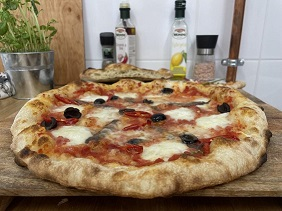

Poniżej znajdziesz przepis na pizzę neapolitańską w domowych warunkach
200 g wody zmieszaj z solą i czterema łyżkami mąki, następnie wrzuć drożdże. Wymieszaj, dodaj całą mąkę i zagniataj ciasto do jego wyrobienia, aż będzie miało jednolitą strukturę. Odstaw ciasto na 4h, następnie podziel ciasto na 4 części, ukształtuj kulki i włóż każdą z nich do naoliwionego pojemnika. Po 6h włóż pojemniki do lodówki na ok 4-5h, po czym wyjmij na 6h przed pieczeniem pizzy. Ukształtuj placki. Pizzę piecz w maksymalnej temperaturze, jaką możesz ustawić w domowym piekarniku.